本文為觀看六角學院：Chrome 網頁除錯功能大解密的筆記。
因為不知道如何下筆，有很長一段時間沒有寫學習紀錄。
大一上到大二上這段時間的作業姑且先存在Github上，但沒有特別用文字記錄自己學習的過程。
希望自己更熟悉Github後，可以把作業做更有效的管理。
今天先寫一下六角學院影片看到的東西。
Chrome 除錯環境介紹
開啟開發人員工具
按F12或按┇>更多工具>開發人員工具。
選取元素及程式碼
在網頁上按右鍵>檢查，可以直接跳到想看的區塊。
可以看到HTML和CSS有哪些，也可以看在哪個檔案哪一行。
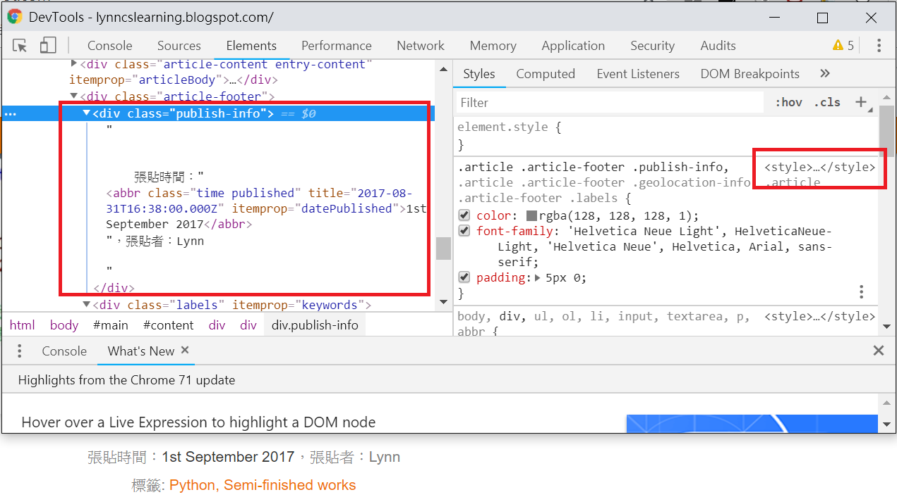
顯示方式
從┇可以選擇開發人員工具顯示的方式。
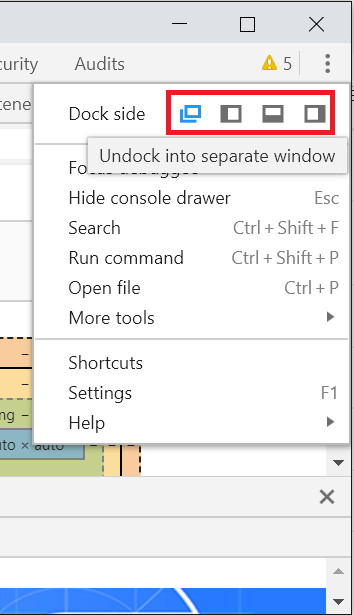
模擬不同載具或響應式的畫面
可以模擬不同裝置看到的畫面，有些網站重整之後會偵測選擇的裝置而改變畫面。
也可以用這個功能檢查響應式網頁的效果。
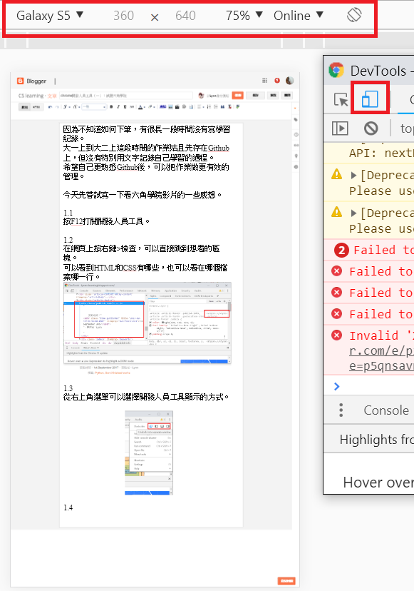
右鍵
可以右鍵存圖、複製連結位址、複製圖片位址。
可以用線上編輯器Codepen玩一下。
HTML、CSS 除錯教學
搜尋程式碼
在開發人員工具用Ctrl+F搜尋HTML和CSS的內容，例如「body > .class名稱」。
可以在css的filter的地方搜尋樣式名稱。
reset.css通常是寫一些清除網頁預設樣式的東西。
刪除線的地方是CSS權重比較低而沒有呈現的部分。
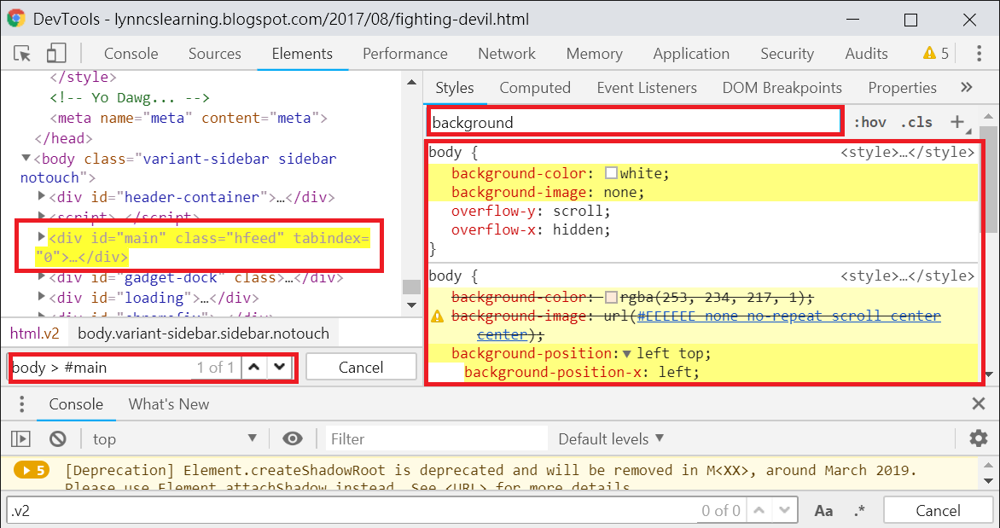
使用chrome編輯網頁，預覽效果
可以在程式碼的地方按右鍵>新增屬性，或雙擊或點…挪動標籤；但原始檔案不會改變。
可以點選css裡面的數值，按↑或↓調整大小。
點選css名稱會顯示更動後的css，可以再複製到自己的原始檔案中。
偵測事件狀態樣式
可以點擊:hov並選擇要模擬的事件狀態，畫面會變成模擬後的樣子，CSS的地方也會有變化。
可以看看瀏覽器預設的一些樣式。
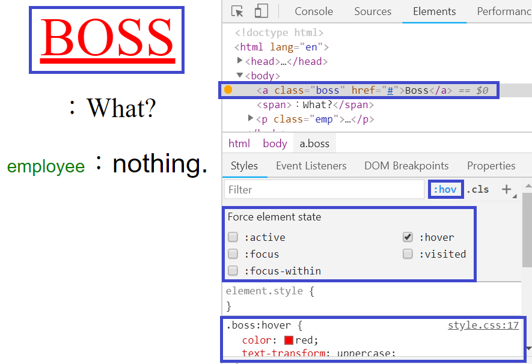
調整CSS3 transition 速率
在會引發狀態的元素上先勾選狀態，再到被引發事件的元素上看被引發的CSS樣式。
樣式中如果有transition，可以點旁邊的標示，直接調整速率變化。
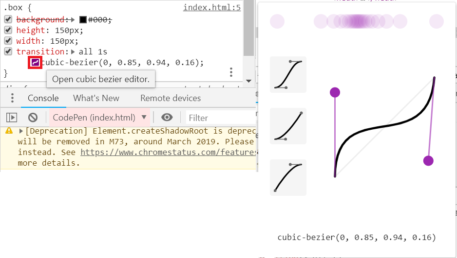
瀏覽CSS3 Animation效果
在Element底下的Console可以找到Animations分欄，點選裡面的方塊。
其中可以用不同速度播放，可以暫停，也可以選擇看不同的時間點。
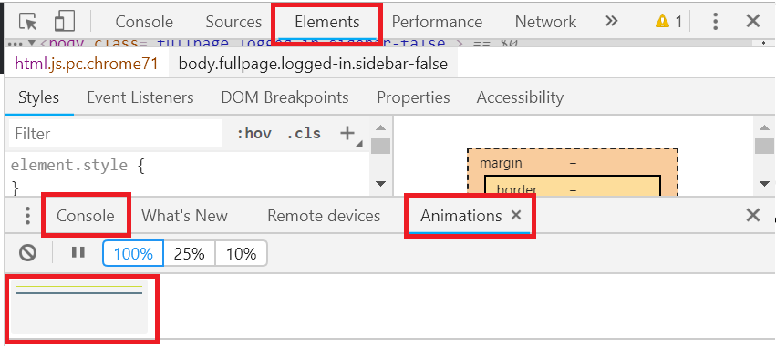
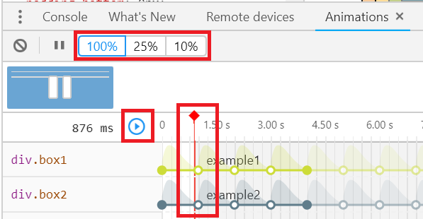
JavaScript 與效能調校
Network
可以觀察不同檔案的request、下載時間、下載順序、檔案大小；也可以模擬不同傳輸技術的狀況。
- DOMContentLoaded：下載HTML檔，並建構完 DOM 樹的時間。
- Load：靜態檔案載入的時間。
- Finish：包含 ajax 動態載入的總時間。
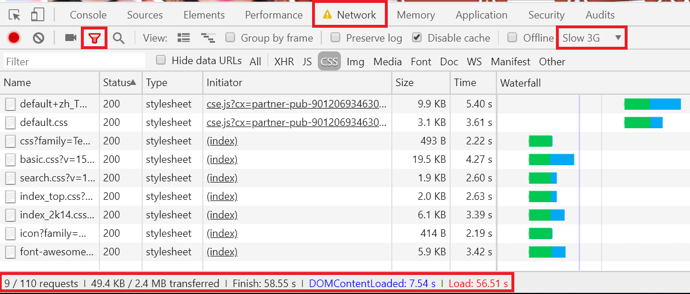
用Console幫JS除錯
- 「console.log()」：方便在console裡檢查變數。
- 「console.table()」：將陣列以表格方式呈現在console。
- 「console.time(‘名稱’)」、「console.timeEnd(‘名稱’)」：寫在想計時的程式碼前後，會計算成毫秒。
可以在Console裡直接寫JS看效果，好用再貼進原始檔案也可以（例如「$(‘p’).hide();」）。
監看變數、設定event中斷點、監看event
Sources>Watch：新增跟刪除要監看的變數，每次變數改變後要按重整才能看出變化。
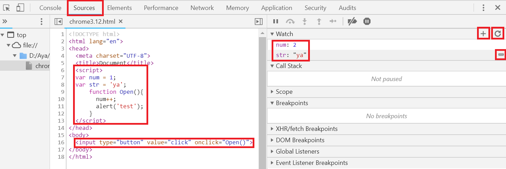
Sources>Event Listener Breakpoints：設定event中斷點，當觸發相關event的時候，scope的地方會顯示相關資訊。
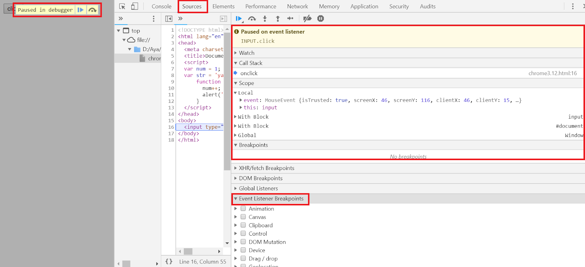
Elements>Event Listeners：看到標籤所包含的event。
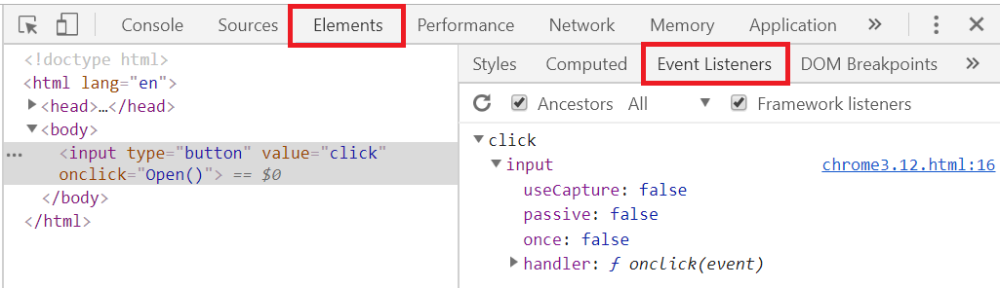
斷點
在行數的地方設定斷點，並利用右上角的按鍵、Watch和Console觀察執行狀況。
- 三角箭頭：前往下一個斷點。
- 弧形箭頭：前往下一個function call。
- 下箭頭：進入下一個funtion call。
- 上箭頭：離開當下function call。
- 右箭頭：下一步。
- 一撇標籤：關閉所有中斷點。
- 豬鼻子：在exception的地方暫停。
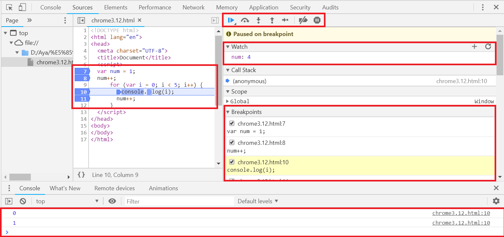
Performance
按紅點點開始記錄，執行完想要觀察的部分後再按一次結束紀錄。
FPS（Figures per second）：每秒跑的圖片數，低的話表示效能不夠好，畫面可能會卡卡的。
CPU：消耗的CPU效能。
可以選定範圍，觀察scripting或function執行所耗費的時間。
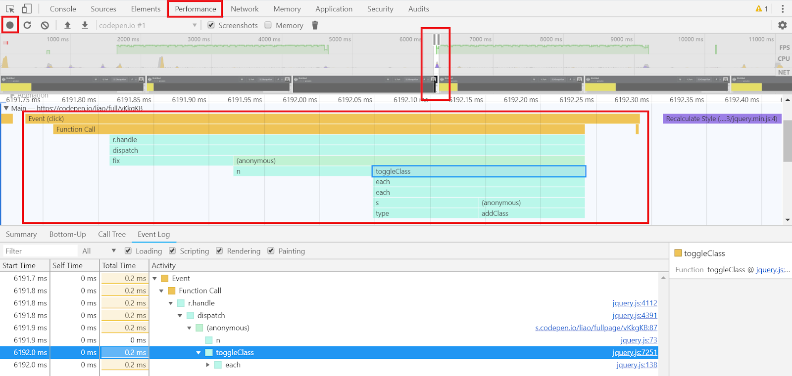
待續